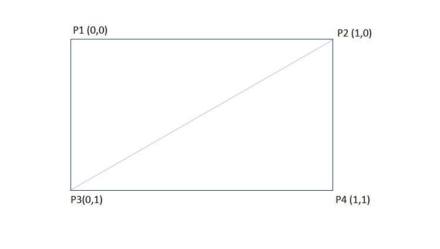
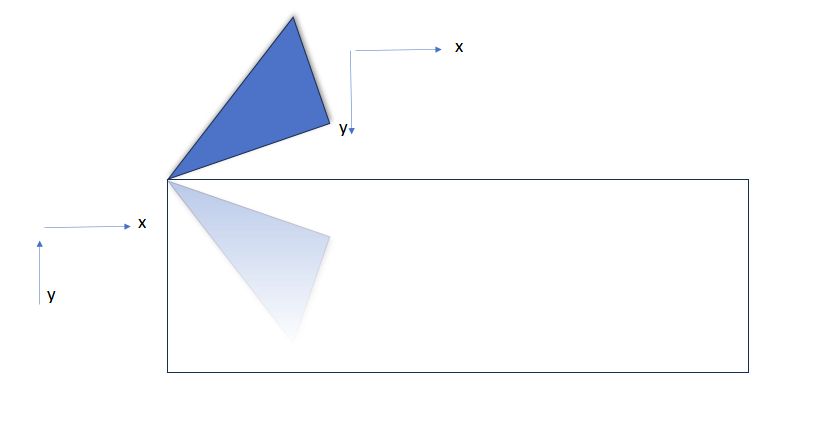
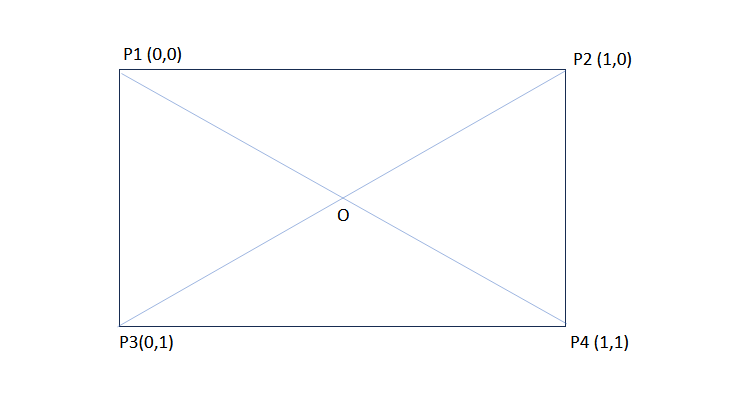
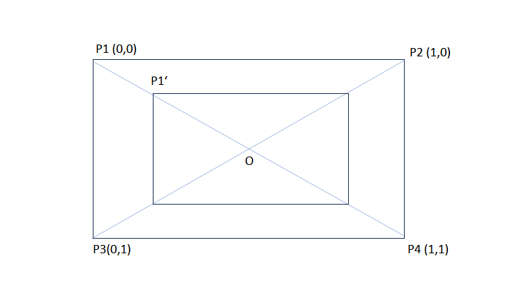
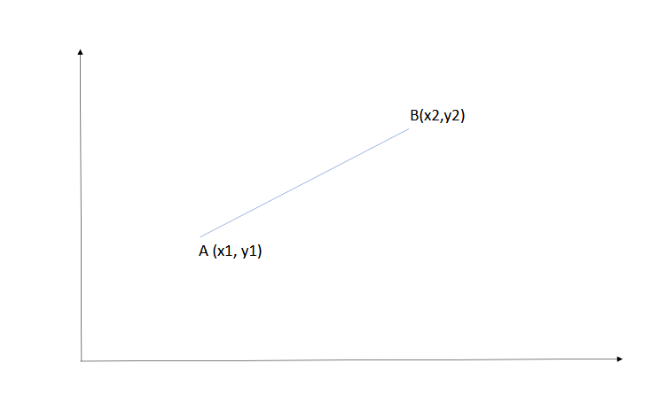

需求
视频渲染通常会有如下功能:
- 1 视频渲染
- 2 支持旋转 [90, 180, 270…任意角度]
- 3 镜像 [垂直, 水平]
- 4 Alpha通道 [虚拟人]
- 5 HDR (通常为10BIT)
输入数据
一个渲染器的输入源目前看上去会有两种:
- 本地预览，来自摄像头、屏幕捕获
- 远端H264\H265等经过解码后的YUV数据
因此, 输入格式会有: YUV\RGBA(分为内存和纹理、8Bit和10Bit)
顶点描述
通常, 画面是一个矩形, 也就是需要4个顶点来描述。指定两个属性: 1. 顶点的位置 2. 要采样的像素坐标
struct VERTEX {
DirectX::XMFLOAT3 pos;
DirectX::XMFLOAT2 tex;
static const D3D11_INPUT_ELEMENT_DESC input_desc[2];
};
const D3D11_INPUT_ELEMENT_DESC VERTEX::input_desc[2] = {
{"SV_POSITION", 0, DXGI_FORMAT_R32G32B32_FLOAT, 0, 0, D3D11_INPUT_PER_VERTEX_DATA, 0},
{"TEXCOORD", 0, DXGI_FORMAT_R32G32_FLOAT, 0, 12, D3D11_INPUT_PER_VERTEX_DATA, 0},
};
//这里jekll不知道为什么会解析错误, 实际上需要多个花括号
static const DirectX::XMVECTORF32 points[4] = {
{0, 0, 0, 0},
{1, 0, 0, 0},
{0, 1, 0, 0},
{1, 1, 0, 0},
};

顶点处理
需要的变换有: 镜像、旋转、缩放、裁剪、平移。 这5个效果都可以通过改变顶点的”位置属性”来做到。
镜像

- 对于水平镜像, 就是将 P1和P2交换, P3和P4交换
- 对于垂直镜像, 就是将 P2和P4交换, P1和P3交换
- 对于垂直+水平, 是将 P1和P4交换, P2和P3交换（对角线）
注意: 我们交换的是UV值.
enum class Mirror : uint8_t {
None = 0,
FlipHorizontally = 1,
FlipVertically = 2,
FlipBoth = FlipHorizontally | FlipVertically,
};
const uint8_t mirror = static_cast<uint8_t>(mirror_mode) & 3u;
for (size_t i = 0; i <4 ;i ++) {
auto uv = points[i ^ mirror].uv;
}
旋转
旋转复杂一些，需要用到高中的数学知识: 点绕着点旋转变换。

为了不破坏图像对于坐标系的相对位置关系，可以选择点0作为旋转的中心点。
在平面坐标上，任意点P(x1,y1)，绕一个坐标点Q(x2,y2)逆时针旋转θ角度后,新的坐标设为(x, y)的计算公式：
x= (x1 - x2) * cos(θ) - (y1 - y2) * sin(θ) + x2 ;
y= (x1 - x2) * sin(θ) + (y1 - y2) * cos(θ) + y2 ;
这个公式可以整理成矩阵运算。
缩放
类似于旋转，我们使用O点作为缩放后的图像的中心点:

在平面坐标上，任意点P(x1,y1)，以坐标点Q(x2,y2)缩放a倍之后,新的坐标设为(x, y)的计算公式：
x= (x1 - x2) * cos(θ) - (y1 - y2) * sin(θ) + x2 ;
y= (x1 - x2) * sin(θ) + (y1 - y2) * cos(θ) + y2 ;
注意: 这个公式当中并没有要求P和Q的初始位置（任意位置都可以）
同样，这个公式可以抽象成矩阵运算。
裁剪
裁剪就简单了, 计算出要裁剪的区域即可。
// 输入参数 SIZE src_dimension, RECT source_region
const DirectX::XMVECTOR source = LoadRect(&source_region);
const DirectX::XMVECTOR source_size = DirectX::XMVectorSwizzle<2, 3, 2, 3>(source);
const DirectX::XMVECTOR dest_size = LoadSize(dst_dimension);
const DirectX::XMVECTOR inverse_source_size =
DirectX::XMVectorReciprocal(LoadSize(src_dimension));
const auto source_tex = DirectX::XMVectorMultiply(source, inverse_source_size);
const auto source_size_tex = DirectX::XMVectorMultiply(source_size, inverse_source_size);
for (size_t i = 0; i < 4; i++) {
auto P1 = DirectX::XMVectorMultiplyAdd(points[i], source_size, source);
// 点P1就是新的位置
}
平移

在平面坐标上，任意点P(x1,y1)，沿向量(a,b)平移, 计算公式：
x= x + a;
y= y + b;
注意: 我们描述的平移向量(比如图像的原中心点和目标中心点)
END
最后, 以一个通用的函数结尾:
// 在src_dimension大小的图形中, 对source_region区域
// * 旋转rotation
// * 做镜像
// * 缩放到dst_dimension
// * 处理后的图像要以center点中心对称
// 将处理的顶点存在vertices中
static void renderVertices(SIZE src_dimension, RECT source_region, int rotation,
Mirror mirror_mode, SIZE dst_dimension, POINT center,
VERTEX* vertices) {
//这里jekll不知道为什么会解析错误, 实际上需要多个花括号
static const DirectX::XMVECTORF32 points[4] = {
{0, 0, 0, 0},
{1, 0, 0, 0},
{0, 1, 0, 0},
{1, 1, 0, 0},
};
const uint8_t mirror = static_cast<uint8_t>(mirror_mode) & 3u;
const DirectX::XMVECTOR source = LoadRect(&source_region);
const DirectX::XMVECTOR source_size = DirectX::XMVectorSwizzle<2, 3, 2, 3>(source);
const DirectX::XMVECTOR dest_size = LoadSize(dst_dimension);
const DirectX::XMVECTOR inverse_source_size =
DirectX::XMVectorReciprocal(LoadSize(src_dimension));
const DirectX::XMVECTOR P2 = LoadMiddlePoint(source);
const DirectX::XMVECTOR C = LoadPoint(center);
// texture coordinate format.
const auto source_tex = DirectX::XMVectorMultiply(source, inverse_source_size);
const auto source_size_tex = DirectX::XMVectorMultiply(source_size, inverse_source_size);
DirectX::XMVECTOR rotation_matrix1;
DirectX::XMVECTOR rotation_matrix2;
if (rotation != 0) {
float sin = 0.f, cos = 0.f;
DirectX::XMScalarSinCos(&sin, &cos, rotation / 360.f * DirectX::XM_2PI);
const auto sinV = DirectX::XMLoadFloat(&sin);
const auto cosV = DirectX::XMLoadFloat(&cos);
rotation_matrix1 = DirectX::XMVectorMergeXY(cosV, sinV);
rotation_matrix2 = DirectX::XMVectorMergeXY(DirectX::XMVectorNegate(sinV), cosV);
}
else {
rotation_matrix1 = DirectX::g_XMIdentityR0;
rotation_matrix2 = DirectX::g_XMIdentityR1;
}
const auto scale_matrix1 = DirectX::XMVectorDivide(dest_size, source_size);
const auto scale_matrix2 = DirectX::XMVectorSubtract(
DirectX::g_XMOne, DirectX::XMVectorDivide(dest_size, source_size));
const auto move =
DirectX::XMVectorPermute<0, 1, 4, 5>(DirectX::XMVectorSubtract(C, P2), DirectX::g_XMZero);
for (size_t i = 0; i < 4; i++) {
auto P1 = DirectX::XMVectorMultiplyAdd(points[i], source_size, source);
P1 = DirectX::XMVectorAdd(DirectX::XMVectorMultiply(P2, scale_matrix2),
DirectX::XMVectorMultiply(P1, scale_matrix1));
const auto V1 = DirectX::XMVectorSubtract(P1, P2);
auto pos = DirectX::XMVectorMultiplyAdd(DirectX::XMVectorSplatX(V1), rotation_matrix1, P2);
pos = DirectX::XMVectorPermute<0, 1, 7, 7>(pos, DirectX::g_XMZero);
pos = DirectX::XMVectorMultiplyAdd(DirectX::XMVectorSplatY(V1), rotation_matrix2, pos);
pos = DirectX::XMVectorAdd(pos, move);
DirectX::XMStoreFloat4(reinterpret_cast<DirectX::XMFLOAT4*>(&((VERTEX*)vertices)[i].pos),
pos);
const auto uv =
DirectX::XMVectorMultiplyAdd(points[i ^ mirror], source_size_tex, source_tex);
DirectX::XMStoreFloat2(&((VERTEX*)vertices)[i].tex, uv);
}
}
最后一个for循环将平移、缩放、旋转、镜像结合在了一起, 我尽量写的清晰。
HDR
太复杂了，单独开篇。